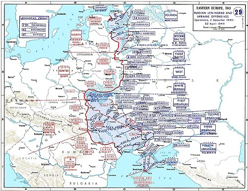
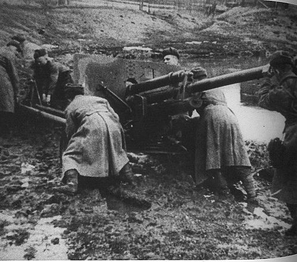
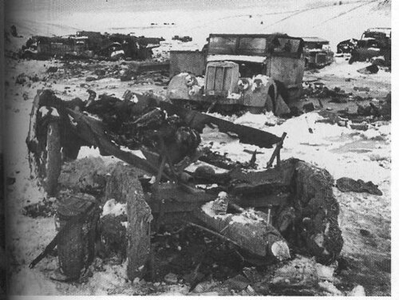

Date
Dec 1943 – May 1944
Location
Right-bank Ukraine
Result
Strategic Soviet Victory

Overview
One of the largest offensives of WWII; it liberated Ukraine and pushed German forces westward.
| Faction | Commanders | Casualties |
|---|---|---|
| USSR | Zhukov, Konev | ~270,000 killed |
| Germany | Manstein (fired) | ~300,000 casualties |
The Conflict
Fought in terrible mud and winter conditions (rasputitsa), Soviet forces executed massive river crossings and encirclements (e.g., Korsun-Cherkassy Pocket). It involved nearly 4 million men and multiple fronts coordinating offensives to break German defenses and seize strategic positions toward Romania and the Balkans.
The operation included several subordinate offensives over months; supply issues and harsh weather made operations costly, but Soviet numerical superiority and operational depth overwhelmed German lines, leading to large pockets of encircled Axis troops.


Significance & Aftermath
- Destroyed many German divisions and weakened Army Group South.
- Opened the way into Romania and the Balkans; led to the dismissal of Field Marshal Manstein.